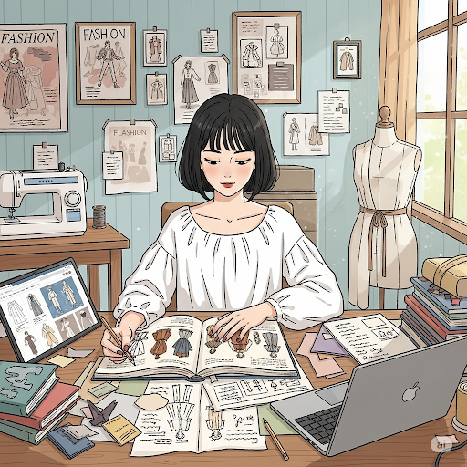
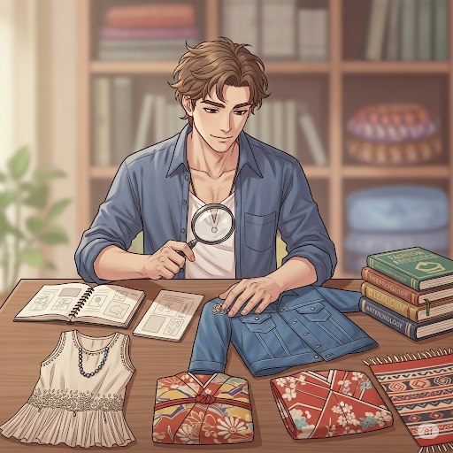
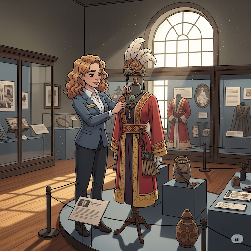

Archaeologist — specializing in Historical Garment Excavation (focuses on textile fragments, clothing fastenings, and fashion-related artifacts from 18th–19th century urban sites).
Persephone Blackwell earned her PhD in Cultural Anthropology from the University of Edinburgh, with a dissertation on post-war fashion trends and their ties to political movements. She has spent over a decade studying photographs, oral histories, and preserved garments to trace how global events—wars, economic booms, youth subcultures—shaped clothing styles. Skilled in archival research, garment preservation, and digital cataloging, she also uses modern imaging technology to analyze fabric wear patterns. Known for her curiosity and attention to detail, she’s equally comfortable poring over old newspapers in an archive or interviewing designers in their studios. Persephone is admired for blending academic rigor with an approachable, storytelling style.
As the museum’s Lead Modern History Researcher, Persephone curates rotating exhibits on 20th- and 21st-century fashion. She oversees garment authentication, builds interactive timelines for visitors, and develops narratives that connect clothing to the social and political landscapes of each era.
Persephone is multilingual (English, French, and Japanese), which allows her to work directly with international archives and sources. She’s a recipient of the Global Threads Fellowship for her work documenting the influence of 1970s Japanese street fashion on Western youth culture. Her defining discovery was uncovering an unlabelled archive of 1960s protest jackets, which became the centerpiece of one of the museum’s most visited exhibits.

Physical Anthropologist (hybrid: Cranio-Textile Forensics) — studies human remains alongside garment/headwear wear-patterns (e.g., hatband impressions, corsetry effects) to infer identity, labor, and social status from c. 1800–1950, bridging into contemporary repatriation and ethics.
Dr. Atlas Inez Moreno holds a PhD in Physical Anthropology from the (fictional) Columbian Institute for Human Histories, with an MSc in Forensic Osteology and a BA in Material Culture. Mentored by Prof. Mireille Sand, Atlas integrates osteometry, garment-history, and community oral histories. They use digital calipers, portable micro-CT, UV/IR photography, photogrammetry, and a handheld 3D surface scanner; everything is logged in a color-coded field notebook system. Atlas is meticulous and empathic, known for reconstructing life histories from tiny cues like muscle attachment changes versus documented work uniforms. They collaborate closely with conservation to stabilize fragile textiles recovered near burials. Their accessible lab zines help visitors understand how evidence becomes interpretation without sensationalism.
Leads the museum’s Human Traces Desk for the Threads Through Time project. Verifies provenance for garments associated with burials, develops an interactive “Wear & Tear Map” where visitors match skeletal markers to historical clothing pressures, supervises grad fellows, and advises curators on ethical display and language.
